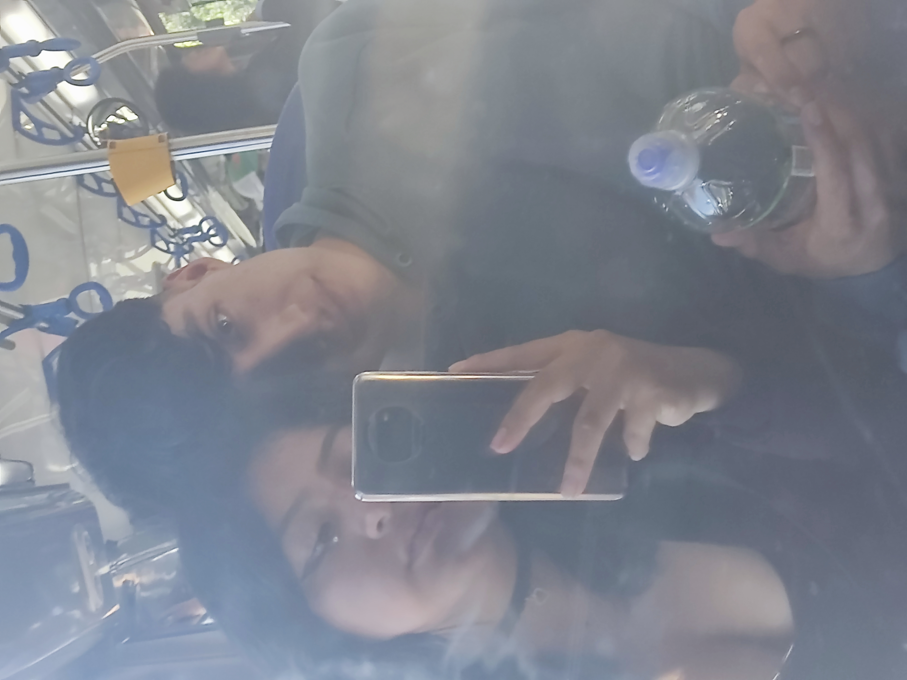
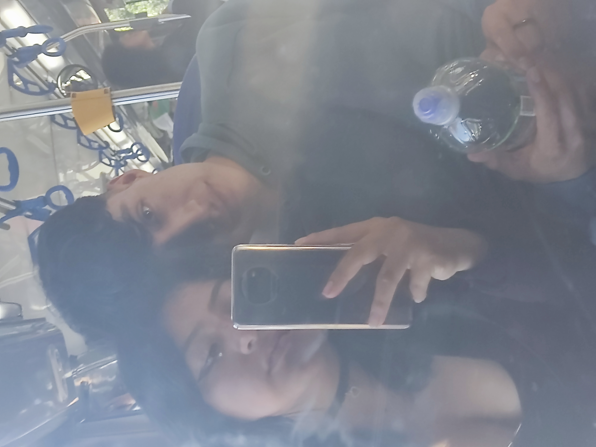
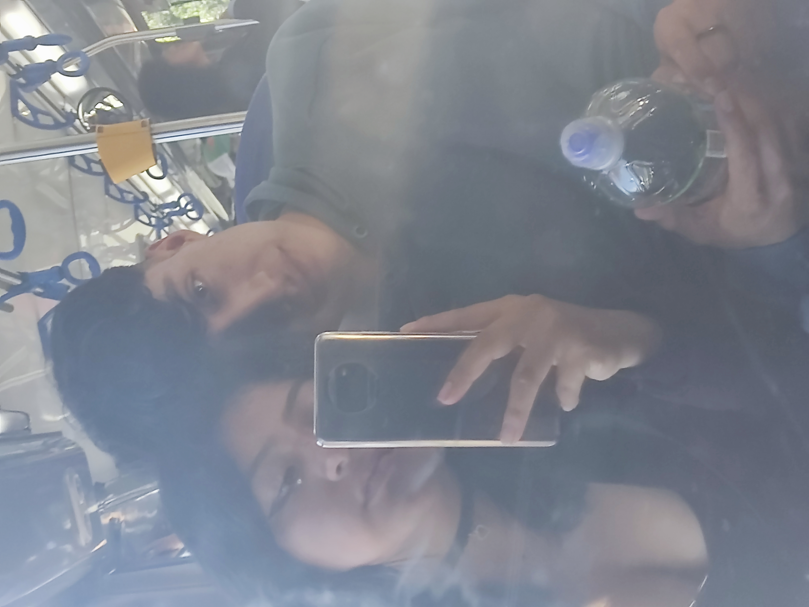

Ochurus, este detalle es para ti. Lo hice con todo el amor que mi corazón siente por ti, pensando en todo lo bonito que despiertas en mí. Al ver estas fotos sentí la necesidad de hacer algo especial, algo que pudiera inmortalizar este tiempo tan lindo que estoy compartiendo a tu lado, espero y anhelo con muchas fuerzas que podamos seguir compartiendo más momentos como estos que queden inmortalizados en nuestra mente y en fotos. Cada foto guarda un recuerdo en mi corazón, en este poco tiempo que llevamos juntos hemos vivido muchas cosas, muchas risas que se quedaron grabadas en mi memoria, enojos y momentos que sin darnos cuenta nos enseñaron a entendernos mejor. Aun en los días difíciles, contigo siempre fui feliz y siempre te voy a elegir porque estar a tu lado me hace sentir en casa, me das calma y me recuerdas lo bonito que es amar. Este detalle es una forma de decirte cuánto te amo y lo agradecido que estoy por cada instante que compartimos.
